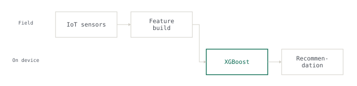

2025 · Graduation project · Yarmouk University · source public
AgriBot AI
Crop and fertiliser recommendation on a Raspberry Pi
Runs on a Raspberry Pi with live sensor input. Code and training pipeline are public.
99% XGBoost accuracy on held-out data

Problem
The recommendation had to run in the field, on a Raspberry Pi reading live soil and weather sensors, with no reliable network to fall back on.
My role
The context line above is the honest split: where it says a team size, the system was a team effort and only the named subsystem was mine.
Approach
The constraint
Whatever runs there has to fit in the board's memory and answer while the operator is still standing in the field. A model that needs an accelerator, or a round trip to a server, is not a candidate however accurate it is.
What was rejected
Model capacity against what the board can actually hold and execute. The deep-learning options were out of the argument before accuracy entered it.
What I built
I chose gradient-boosted trees over engineered features rather than anything needing an accelerator: XGBoost at 99% and Random Forest at 94% on held-out agricultural and sensor data, both small enough to load and run on the board itself. Inference happens on the device, so a dropped connection degrades reporting rather than recommendations. The code and training pipeline are public.
Results
Every number above is measured. None is estimated.
Stack
Links
What I learned
Runs on a Raspberry Pi with live sensor input. Code and training pipeline are public.